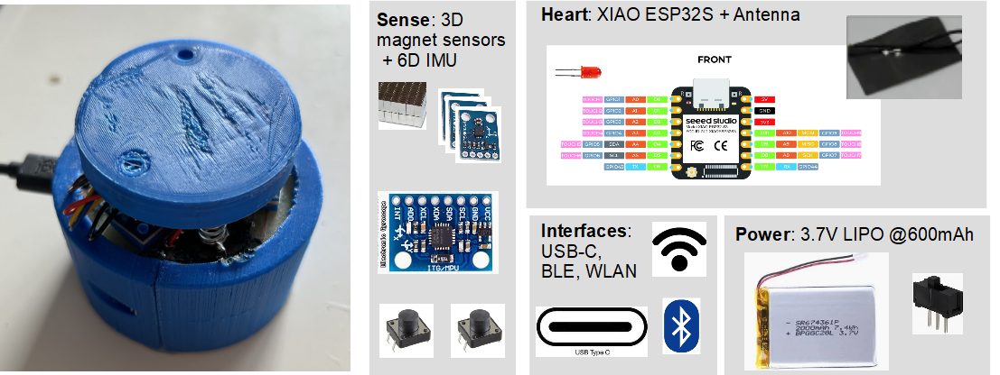
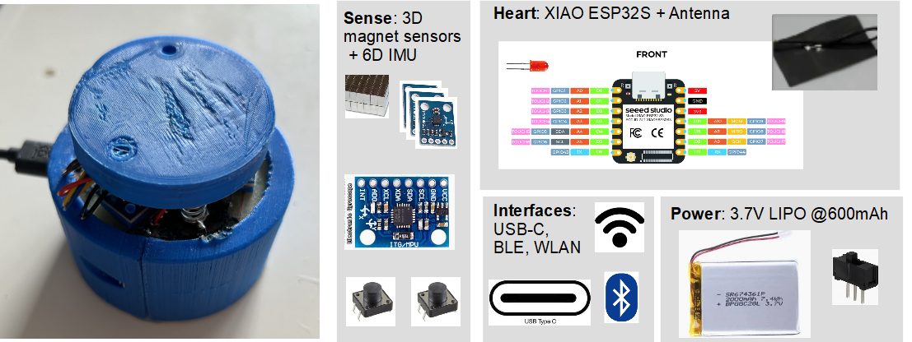

Welcome to Galaxy6D’s documentation!#
Galaxy6D is a simple DIY full 6D knob based on magnetic sensors, permanent magnets and an inertial measurement unit which can be used as input device (i.g. for CAD, …).
Galaxy6D is a simple DIY full 6D knob based on magnetic sensors, permanent magnets and an inertial measurement unit which can be used as input device (i.g. for CAD, …).
